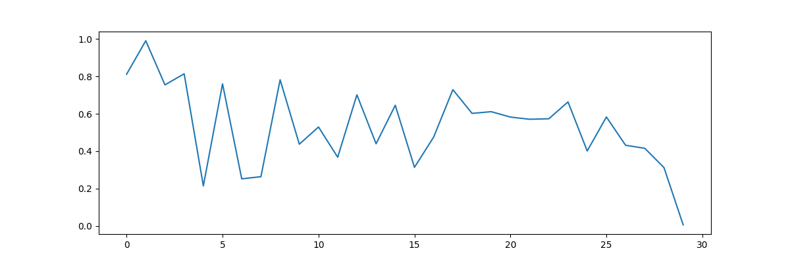
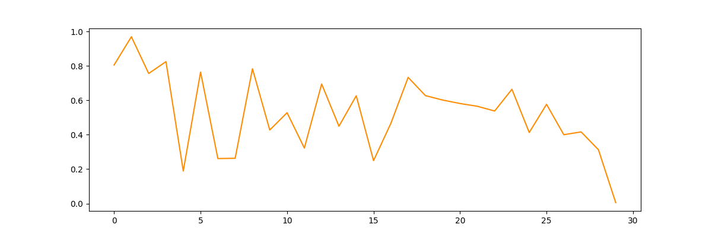

Transactional Fraud Detection
A hybrid anomaly-detection pipeline using Autoencoders and traditional ML classifiers to identify suspicious transactions.
The Idea & Approach
(loading summary...)
Original (vector)

Reconstructed

The landing image shows AutoEncoder performance on held-out test data (visualized as a PNG). The autoencoder learns normal transaction patterns; large reconstruction deviations signal anomalies. The two images above compare the original data and its autoencoder reconstruction.
How It Works — Process & Workflow
1
Data preprocessing & feature engineering
Handle missing values, perform encodings, trim obvious outliers and scale features using MinMax. Engineer time-based and behavioural features (time deltas, frequency windows). These steps reduce distributional noise and improve model stability.
2
Autoencoder training
A bottleneck architecture compresses inputs into latent space and reconstructs them. Trained primarily on legitimate transactions with early stopping to avoid memorization. The autoencoder learns the normal data manifold — deviations imply anomalies.
3
Reconstruction error as anomaly score
Compute per-sample MSE between original & reconstructed features. Use percentile/statistical thresholds to flag anomalies, making thresholding robust across feature sets and operating points.
4
Hybrid classification & decisioning
A Stacking Classifier where the base models are XGBClassifier, Logistic Regression, and RandomForestClassifier, and the meta-model is GaussianNB. This ensemble leverages the strengths of gradient boosting, linear modeling, and bagging-based trees, with the probabilistic meta-model improving generalization and handling uncertainty in predictions.
Results & Insights
Classification Reports
| Dataset | Class | Precision | Recall | F1-score | Support |
|---|---|---|---|---|---|
| Train | 0.0 | 1.00 | 1.00 | 1.00 | 45491 |
| 1.0 | 1.00 | 1.00 | 1.00 | 78 | |
| Test | 0.0 | 1.00 | 1.00 | 1.00 | 11373 |
| 1.0 | 0.86 | 0.95 | 0.90 | 20 |
Train shows perfect results — check for potential overfitting via validation curves. Test metrics: strong recall (0.95) for fraud but slightly lower precision (0.86), indicating some false positives; threshold and decision rules can be tuned based on operational cost.
Metric comparisons
Train
Test